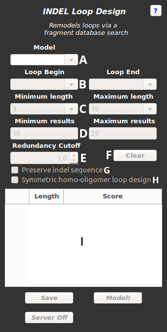

Abstract: INDEL provides an easy-to-use method for modeling the structural changes associated with insertions and deletions. Specify two anchors for the loop search, as well as parameters to guide the search.

Figure 1: Schematic of the INDEL panel
A: Model Menu - Use this menu to select the protein model that will undergo loop modeling.
B: Loop Begin/End - Select the two residues that will anchor the search.
C: Minimum/Maximum Length - Select a range of allowable insertion lengths
D: Minimum/Maximum Results - Minimum, maximum number of acceptble results to return.
E: Redundancy Cutoff - Choose an RMSD value to determine if two loops are structurally redundant. Lower --> less stringent
F: Clear - Reset search parameters to their defaults.
G: Preserve indel sequence - If this is selected, the sequence corresponding to the incorporated fragment will also be incorporated.
H: Symmetric homo-oligomer design - When designing a loop into the same position for multiple symmetric monomers, select this to fit the loop to identical positions on each monomer.
I: Loop Browser - Use this table to view loop search results. Hit finalize to accept or reject results.